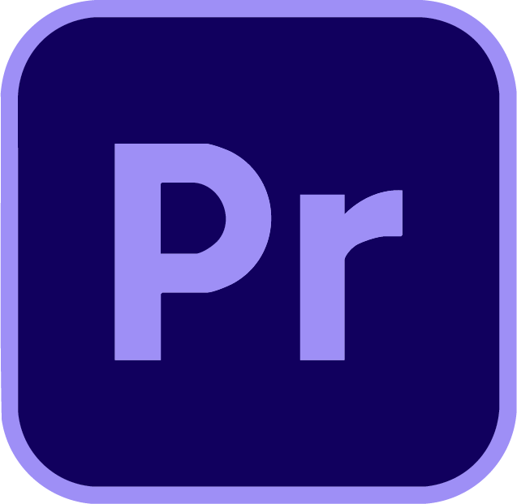

Cette vidéo est un travail réalisé avec deux autres personnes dans le but de promouvoir la formation MMI. J’ai été en charge du montage, mais aussi d’une grande partie des animations tandis que mes partenaires ont surtout travaillé sur la prise d’image et le storyboard. Malgré tout, nous avons tous contribué à cette vidéo et j’ai pu travailler sur l’intégration de motion design dans une vidéo qui était surtout en prise de vue réelle et élargir ma manière de créer et d'appréhender mes projets vidéos.
